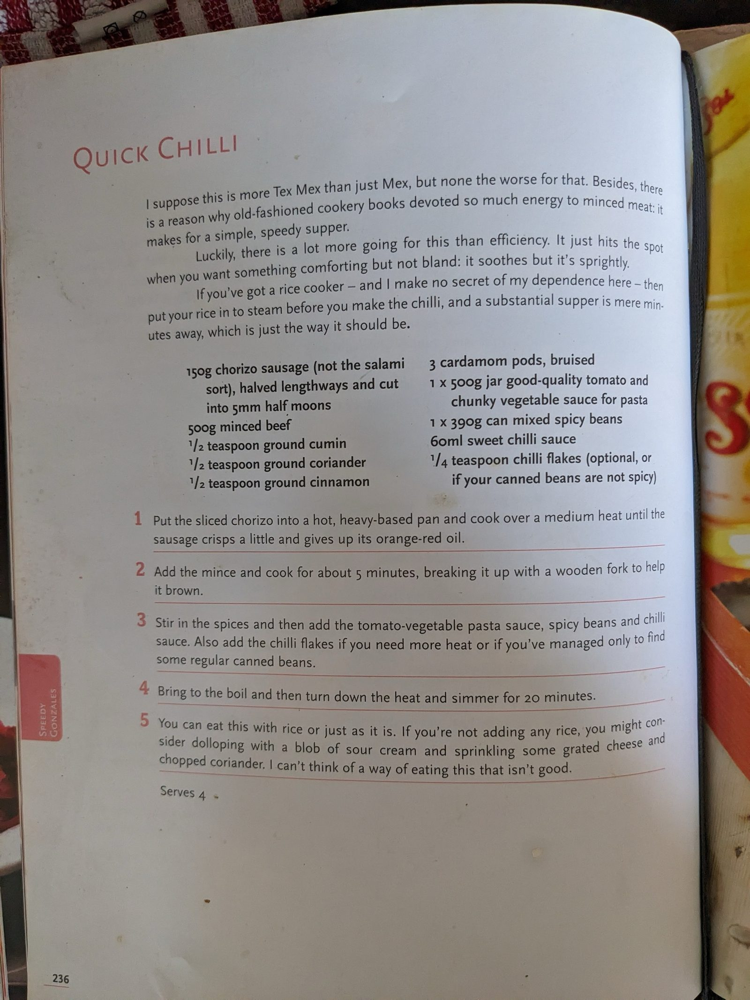

Nigella's Quick Chilli

Ingredients
Method
- Put the 150g sliced chorizo into a hot, heavy-based pan and cook over a medium heat until the sausage crisps a little and gives up its orange-red oil.
- Add the 500g minced beef and cook for about 5 minutes, breaking it up with a wooden fork to help it brown.
- Stir in the ½ tsp ground cumin, ½ tsp ground coriander, ½ tsp ground cinnamon and 3 bruised cardamom pods, then add the 500g jar tomato and vegetable pasta sauce, 390g can spicy beans and 60ml sweet chilli sauce. Also add the ¼ tsp chilli flakes if you need more heat, or if you've managed only to find some regular canned beans.
- Bring to the boil, then turn down the heat and simmer for 20 minutes.
- You can eat this with rice or just as it is. If you're not adding any rice, consider dolloping with a blob of sour cream and sprinkling over some grated cheese and chopped coriander.
Notes
More Tex Mex than Mex, but none the worse for it — a simple, speedy supper.
If you've got a rice cooker, put the rice in to steam before you make the chilli.
Source: Nigella Lawson, p.236